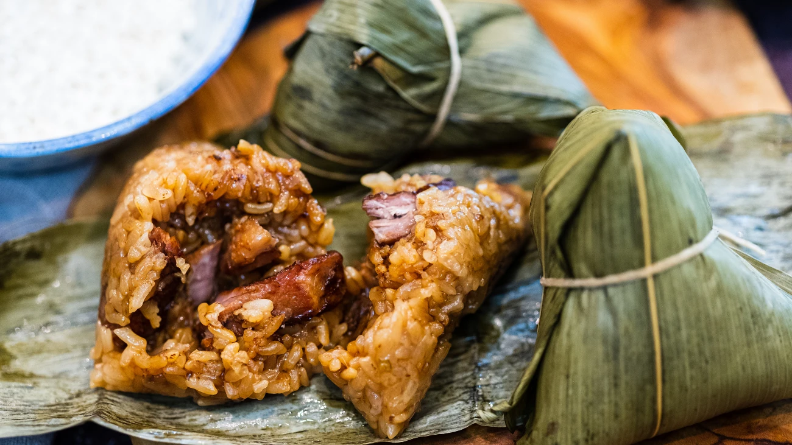
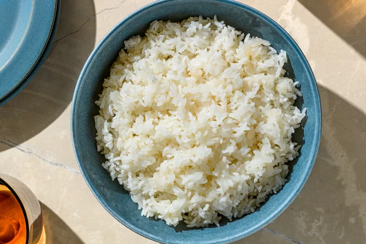
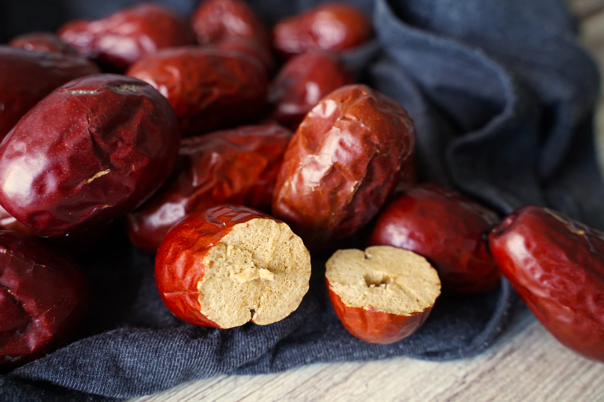
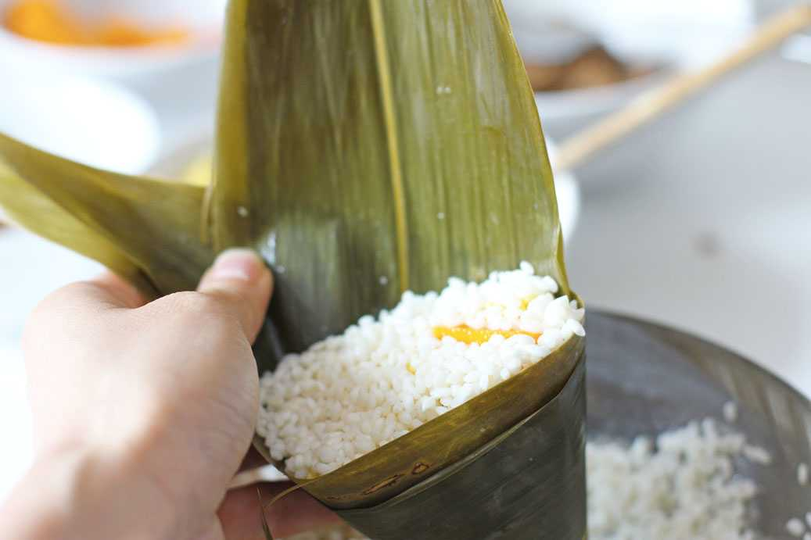

All about Zongzi
header link one
header link two
header link three
All about Zongzi
This website is dedicated to the art and tradition of making zongzi. What are you waiting for? Make some yourself now!
Sign up

Steps of Making Zongzi

Step 1: Soak the glutinous rice in water for at least 4 hours.

Step 2: Soak dried jujubes in water for at least 1 hour.

Step 3: Put rice and jujube in a wrapper.
Step 4: Boil zongzi for 2 hours and serve!.
Wrapped in leaves, filled with memories — zongzi is more than food; it's a taste of tradition.
- Anonymous